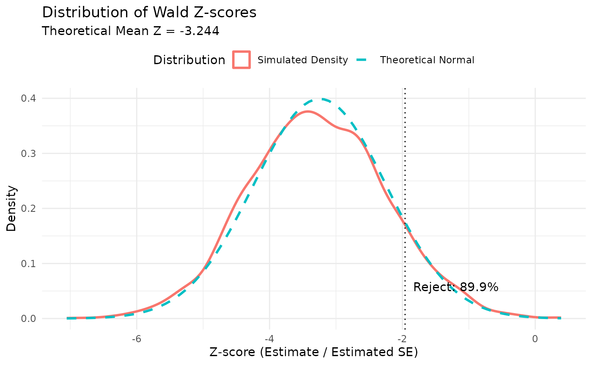

Verification of sample size calculation via simulation
Source:vignettes/verification-simulation.Rmd
verification-simulation.RmdIntroduction
This vignette verifies the accuracy of the
sample_size_nbinom() function by comparing its theoretical
predictions for average exposure, statistical information, and power
against results from a large-scale simulation study.
We specifically test a scenario with:
- Piecewise constant accrual rates.
- Piecewise exponential dropout (constant in this example).
- Negative binomial outcomes.
- Fixed follow-up design.
Simulation design
The study sample size suggested by the Friede method is used to evaluate the accuracy of that method. The parameters for both the theoretical calculation and the simulation study are as follows:
Parameters
- Rates: \(\lambda_1 = 0.4\) (Control), \(\lambda_2 = 0.3\) (Experimental).
- Dispersion: \(k = 0.5\).
- Power: 90%.
- Alpha: 0.025 (one-sided).
- Dropout: 10% per year adjusted to monthly rate (\(\delta = 0.1 / 12\)).
- Trial duration: 24 months.
- Max follow-up: 12 months.
- Event gap: 30 days (approx 0.082 years).
- Accrual: Piecewise linear ramp-up over 12 months (Rate \(R\) for 0-6mo, \(2R\) for 6-12mo).
Theoretical calculation
First, we calculate the required sample size and expected properties
using sample_size_nbinom().
# Parameters
lambda1 <- 0.4
lambda2 <- 0.3
dispersion <- 0.5
power <- 0.9
alpha <- 0.025
dropout_rate <- 0.1 / 12
max_followup <- 12
trial_duration <- 24
event_gap <- 20 / 30.42 # 20 days
# Accrual targeting 90% power
# We provide relative rates (1:2) and the function scales them to achieve power
accrual_rate_rel <- c(1, 2)
accrual_duration <- c(6, 6)
design <- sample_size_nbinom(
lambda1 = lambda1, lambda2 = lambda2, dispersion = dispersion,
power = power,
alpha = alpha, sided = 1,
accrual_rate = accrual_rate_rel,
accrual_duration = accrual_duration,
trial_duration = trial_duration,
dropout_rate = dropout_rate,
max_followup = max_followup,
event_gap = event_gap
)
# Extract calculated absolute accrual rates
accrual_rate <- design$accrual_rate
print(design)
#> Sample size for negative binomial outcome
#> ==========================================
#>
#> Sample size: n1 = 211, n2 = 211, total = 422
#> Expected events: 1366.9 (n1: 763.1, n2: 603.8)
#> Power: 90%, Alpha: 0.025 (1-sided)
#> Rates: control = 0.4000, treatment = 0.3000 (RR = 0.7500)
#> Dispersion: 0.5000, Avg exposure (calendar): 11.42
#> Avg exposure (at-risk): n1 = 9.04, n2 = 9.54
#> Event gap: 0.66
#> Dropout rate: 0.0083
#> Accrual: 12.0, Trial duration: 24.0
#> Max follow-up: 12.0Simulation results
We simulated 3,600 trials using the parameters defined above from the
Friede method. This number of simulations was chosen to achieve a
standard error for the power estimate of approximately 0.005 when the
true power is 90% (\(\sqrt{0.9 \times 0.1 /
3600} = 0.005\)). The simulation script is located in
data-raw/generate_simulation_data.R.
# Load pre-computed simulation results
results_file <- system.file("extdata", "simulation_results.rds", package = "gsDesignNB")
if (results_file == "" && file.exists("../inst/extdata/simulation_results.rds")) {
results_file <- "../inst/extdata/simulation_results.rds"
}
if (results_file != "") {
sim_data <- readRDS(results_file)
results <- sim_data$results
design_ref <- sim_data$design
} else {
# Fallback if data is not available (e.g. not installed yet)
# This block allows the vignette to build without the data, but warns.
warning("Simulation results not found. Skipping verification plots.")
results <- NULL
design_ref <- design
}Summary of verification results
We compare the theoretical predictions from
sample_size_nbinom() with the observed simulation results
across multiple metrics.
Key distinction: Total Exposure vs Exposure at Risk
-
Total Exposure (
tte_total): The calendar time a subject is on study, from randomization to the analysis cut date (or censoring). This is the same for both treatment arms by design. -
Exposure at Risk (
tte): The time during which a subject can experience a new event. After each event, there is an “event gap” period during which new events are not counted (e.g., representing recovery time or treatment effect). This differs by treatment group because the group with more events loses more time to gaps.
The theoretical sample size calculation uses exposure at risk internally, but reports both metrics for transparency.
# ---- Compute all metrics ----
# Number of simulations
n_sims <- sum(!is.na(results$estimate))
# Total Exposure (calendar follow-up time)
# Note: exposure is the same for both arms in the design (by symmetry)
theo_exposure <- design_ref$exposure[1]
# Check which column names are available in the results
# (Support both old and new naming conventions)
has_new_cols <- "exposure_total_control" %in% names(results)
if (has_new_cols) {
obs_exposure_ctrl <- mean(results$exposure_total_control)
obs_exposure_exp <- mean(results$exposure_total_experimental)
obs_exposure_at_risk_ctrl <- mean(results$exposure_at_risk_control)
obs_exposure_at_risk_exp <- mean(results$exposure_at_risk_experimental)
} else {
# Legacy: old simulation used 'exposure_control' which was actually at-risk time
obs_exposure_ctrl <- NA
obs_exposure_exp <- NA
obs_exposure_at_risk_ctrl <- mean(results$exposure_control)
obs_exposure_at_risk_exp <- mean(results$exposure_experimental)
}
# Exposure at risk (time at risk excluding event gaps)
theo_exposure_at_risk_ctrl <- design_ref$exposure_at_risk_n1
theo_exposure_at_risk_exp <- design_ref$exposure_at_risk_n2
# Events by treatment group
theo_events_ctrl <- design_ref$events_n1
theo_events_exp <- design_ref$events_n2
obs_events_ctrl <- mean(results$events_control)
obs_events_exp <- mean(results$events_experimental)
# Treatment effect
true_rr <- lambda2 / lambda1
true_log_rr <- log(true_rr)
mean_log_rr <- mean(results$estimate, na.rm = TRUE)
# Variance
theo_var <- design_ref$variance
# Use median of SE^2 for robust estimate
median_se_sq <- median(results$se^2, na.rm = TRUE)
# Empirical variance of estimates
emp_var <- var(results$estimate, na.rm = TRUE)
# Power
theo_power <- design_ref$power
emp_power <- mean(results$p_value < design_ref$inputs$alpha, na.rm = TRUE)
# Sample size reproduction
z_alpha <- qnorm(1 - design_ref$inputs$alpha)
z_beta <- qnorm(design_ref$inputs$power)
n_sim_total <- design_ref$n_total
n_reproduced <- n_sim_total * (emp_var * (z_alpha + z_beta)^2) / (mean_log_rr^2)
# ---- Build summary table ----
summary_df <- data.frame(
Metric = c(
"Total Exposure (months) - Control",
"Total Exposure (months) - Experimental",
"Exposure at Risk (months) - Control",
"Exposure at Risk (months) - Experimental",
"Events per Subject - Control",
"Events per Subject - Experimental",
"Treatment Effect: log(RR)",
"Variance of log(RR)",
"Power",
"Sample Size"
),
Theoretical = c(
theo_exposure,
theo_exposure,
theo_exposure_at_risk_ctrl,
theo_exposure_at_risk_exp,
theo_events_ctrl / (n_sim_total / 2),
theo_events_exp / (n_sim_total / 2),
true_log_rr,
theo_var,
theo_power,
n_sim_total
),
Simulated = c(
obs_exposure_ctrl,
obs_exposure_exp,
obs_exposure_at_risk_ctrl,
obs_exposure_at_risk_exp,
obs_events_ctrl / (n_sim_total / 2),
obs_events_exp / (n_sim_total / 2),
mean_log_rr,
median_se_sq,
emp_power,
n_reproduced
),
stringsAsFactors = FALSE
)
summary_df$Difference <- summary_df$Simulated - summary_df$Theoretical
summary_df$Rel_Diff_Pct <- 100 * summary_df$Difference / abs(summary_df$Theoretical)
summary_df |>
gt() |>
tab_header(
title = md("**Verification of sample_size_nbinom() Predictions**"),
subtitle = paste0("Based on ", n_sims, " simulated trials")
) |>
tab_row_group(
label = md("**Sample Size**"),
rows = Metric == "Sample Size"
) |>
tab_row_group(
label = md("**Power**"),
rows = Metric == "Power"
) |>
tab_row_group(
label = md("**Variance**"),
rows = Metric == "Variance of log(RR)"
) |>
tab_row_group(
label = md("**Treatment Effect**"),
rows = Metric == "Treatment Effect: log(RR)"
) |>
tab_row_group(
label = md("**Events**"),
rows = grepl("Events", Metric)
) |>
tab_row_group(
label = md("**Exposure**"),
rows = grepl("Exposure", Metric)
) |>
row_group_order(groups = c("**Exposure**", "**Events**", "**Treatment Effect**",
"**Variance**", "**Power**", "**Sample Size**")) |>
fmt_number(columns = c(Theoretical, Simulated, Difference), decimals = 4) |>
fmt_number(columns = Rel_Diff_Pct, decimals = 2) |>
cols_label(
Metric = "",
Theoretical = "Theoretical",
Simulated = "Simulated",
Difference = "Difference",
Rel_Diff_Pct = "Rel. Diff (%)"
) |>
sub_missing(missing_text = "—")| Verification of sample_size_nbinom() Predictions | ||||
| Based on 3600 simulated trials | ||||
| Theoretical | Simulated | Difference | Rel. Diff (%) | |
|---|---|---|---|---|
| Exposure | ||||
| Total Exposure (months) - Control | 11.4195 | 11.4156 | −0.0039 | −0.03 |
| Total Exposure (months) - Experimental | 11.4195 | 11.4167 | −0.0029 | −0.03 |
| Exposure at Risk (months) - Control | 9.0417 | 9.2581 | 0.2164 | 2.39 |
| Exposure at Risk (months) - Experimental | 9.5382 | 9.6935 | 0.1553 | 1.63 |
| Events | ||||
| Events per Subject - Control | 3.6167 | 3.3778 | −0.2389 | −6.61 |
| Events per Subject - Experimental | 2.8615 | 2.6983 | −0.1631 | −5.70 |
| Treatment Effect | ||||
| Treatment Effect: log(RR) | −0.2877 | −0.2891 | −0.0014 | −0.48 |
| Variance | ||||
| Variance of log(RR) | 0.0079 | 0.0078 | −0.0001 | −1.11 |
| Power | ||||
| Power | 0.9000 | 0.8992 | −0.0008 | −0.09 |
| Sample Size | ||||
| Sample Size | 422.0000 | 437.2366 | 15.2366 | 3.61 |
Notes:
- Total Exposure is the average calendar follow-up time per subject. The theoretical value is the same for both arms (symmetric design), while simulated values may differ slightly due to sampling variability in enrollment and dropout.
- Exposure at Risk is the time during which new events can occur, after subtracting the “event gap” periods following each event. The control group has lower exposure at risk because it experiences more events (higher rate), each followed by a gap period.
- Events per Subject is the mean number of events per subject in each treatment group.
- Variance uses the median of the estimated variances (SE²) from each simulation, which is robust to outliers from unstable model fits.
- Sample Size is back-calculated using the standard asymptotic formula with the observed treatment effect and variance.
Power confidence interval
A 95% confidence interval for the empirical power confirms that the theoretical power falls within the simulation error bounds.
power_ci <- binom.test(sum(results$p_value < design_ref$inputs$alpha, na.rm = TRUE),
nrow(results))$conf.int
cat("95% CI for empirical power: [", round(power_ci[1], 4), ", ", round(power_ci[2], 4), "]\n", sep = "")
#> 95% CI for empirical power: [0.8889, 0.9088]
cat("Theoretical power:", round(theo_power, 4), "\n")
#> Theoretical power: 0.9Distribution of the test statistic
Here we plot the density of the Wald Z-scores from the simulation and compare it to the expected normal distribution centered at the theoretical mean Z-score.
# Calculate Z-scores using estimated variance (Wald statistic)
# Z = (hat(delta) - 0) / SE_est
z_scores <- results$estimate / results$se
# Theoretical mean Z-score under the alternative
# E[Z] = log(RR) / sqrt(V_theo)
theo_se <- sqrt(theo_var)
theo_mean_z <- log(lambda2 / lambda1) / theo_se
# Critical value for 1-sided alpha (since we are looking at lower tail for RR < 1)
# However, the Z-scores here are negative (log(0.3/0.4) < 0).
# Rejection region is Z < qnorm(alpha)
crit_val <- qnorm(design_ref$inputs$alpha)
# Proportion of simulations rejecting the null
prop_reject <- mean(z_scores < crit_val, na.rm = TRUE)
# Plot
ggplot(data.frame(z = z_scores), aes(x = z)) +
geom_density(aes(color = "Simulated Density"), linewidth = 1) +
stat_function(
fun = dnorm,
args = list(mean = theo_mean_z, sd = 1),
aes(color = "Theoretical Normal"),
linewidth = 1,
linetype = "dashed"
) +
geom_vline(xintercept = crit_val, linetype = "dotted", color = "black") +
annotate(
"text",
x = crit_val, y = 0.05,
label = paste0(" Reject: ", round(prop_reject * 100, 1), "%"),
hjust = 0, vjust = 0
) +
labs(
title = "Distribution of Wald Z-scores",
subtitle = paste("Theoretical Mean Z =", round(theo_mean_z, 3)),
x = "Z-score (Estimate / Estimated SE)",
y = "Density",
color = "Distribution"
) +
theme_minimal() +
theme(legend.position = "top")
Given the apparent location difference in the above plot for the simulation versus theoretical normal distribution, we can also examine the theoretical versus simulation mean and standard deviation of \(log(\theta)\) .
# Theoretical mean and SD of log(RR)
# Let's also add median, skewness, and kurtosis
theo_mean_log_rr <- log(lambda2 / lambda1)
theo_sd_log_rr <- sqrt(theo_var)
emp_mean_log_rr <- mean(results$estimate, na.rm = TRUE)
emp_sd_log_rr <- sd(results$estimate, na.rm = TRUE)
emp_median_log_rr <- median(results$estimate, na.rm = TRUE)
# Skewness and Kurtosis (using trimmed data to reduce outlier influence)
# Trim extreme 1% on each tail for robust estimates
ests <- results$estimate[!is.na(results$estimate)]
q_low <- quantile(ests, 0.01)
q_high <- quantile(ests, 0.99)
ests_trimmed <- ests[ests >= q_low & ests <= q_high]
n_trimmed <- length(ests_trimmed)
m3 <- sum((ests_trimmed - mean(ests_trimmed))^3) / n_trimmed
m4 <- sum((ests_trimmed - mean(ests_trimmed))^4) / n_trimmed
s2 <- sum((ests_trimmed - mean(ests_trimmed))^2) / n_trimmed
emp_skew_log_rr <- m3 / s2^(3/2)
emp_kurt_log_rr <- m4 / s2^2
comparison_log_rr <- data.frame(
Metric = c("Mean", "SD", "Median", "Skewness (trimmed)", "Kurtosis (trimmed)"),
Theoretical = c(theo_mean_log_rr, theo_sd_log_rr, theo_mean_log_rr, 0, 3),
Simulated = c(emp_mean_log_rr, emp_sd_log_rr, emp_median_log_rr, emp_skew_log_rr, emp_kurt_log_rr),
Difference = c(
emp_mean_log_rr - theo_mean_log_rr,
emp_sd_log_rr - theo_sd_log_rr,
emp_median_log_rr - theo_mean_log_rr,
emp_skew_log_rr - 0,
emp_kurt_log_rr - 3
)
)
# Display table
comparison_log_rr |>
gt() |>
tab_header(title = md("**Comparison of log(RR) Statistics**")) |>
fmt_number(columns = where(is.numeric), decimals = 4)| Comparison of log(RR) Statistics | |||
| Metric | Theoretical | Simulated | Difference |
|---|---|---|---|
| Mean | −0.2877 | −0.2891 | −0.0014 |
| SD | 0.0887 | 0.0908 | 0.0021 |
| Median | −0.2877 | −0.2912 | −0.0036 |
| Skewness (trimmed) | 0.0000 | 0.0603 | 0.0603 |
| Kurtosis (trimmed) | 3.0000 | 2.5078 | −0.4922 |
Conclusion
The simulation results confirm that sample_size_nbinom()
reasonably predicts average exposure, variance (information), and power
for this complex design with piecewise accrual and dropout. However,
given the slight underpowering that the simulation study suggests, it
may be useful to consider a larger sample size than the Friede
approximation suggests, with power verified by simulation.